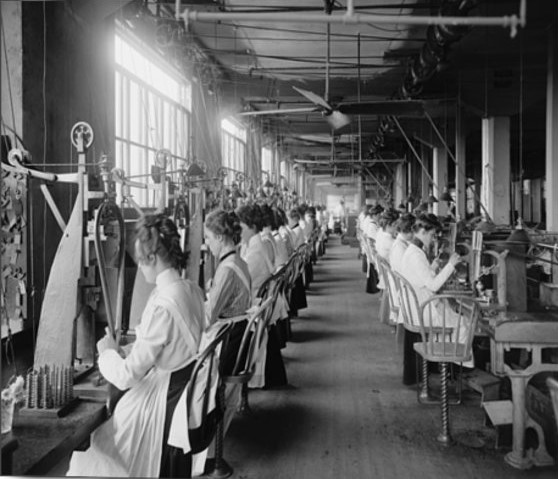

Le conseguenze sociali e ambientali.
La nascita delle fabbriche.
Furono costruite fabbriche per contenere i nuovi macchinari, questo ridusse il lavoro a domicilio, le prime fabbriche sorsero vicino
ai fiumi per l’energia idraulica, solo quando si utilizzò il vapore sorsero dove erano necessarie, preferibilmente
vicino ai giacimenti di carbone.

Il lavoro di fabbrica è più efficiente.
Fino a quel momento si producevano tutti gli strumenti a mano, perciò erano diverso gli uni dagli altri, però con il lavoro in
fabbrica non fu più così, poiché il lavoro era suddiviso in parti semplici e ripetitive assegnate a lavoratori diversi,
una vera e propria catena di montaggio.

Ma il lavoro è duro e malpagato.
Il lavoro era duro per gli orari che venivano imposti dai macchinari e dall’orologio, gli operai erano sotto controllo continuo dei
sorveglianti, i salari erano bassi, donne e bambini erano pagati ancora meno, nelle miniere le condizioni erano ancora peggio,
siccome poteva accadere che ci fossero crolli da allagamenti o esplosioni di gas.
Le città industriali.
Molti lavoratori venivano dalle campagne per andare in città per cercare lavoro, così le città si ingrandirono in modo rapido e
disordinato, vicino alle fabbriche si costruirono alloggi per gli operai, le condizioni igieniche erano disastrose,le fabbriche
producevano un sacco di inquinamento ciò favoriva la diffusione di malattie infettive,
la mortalità era elevata infatti la durata media di vita era 35 anni.